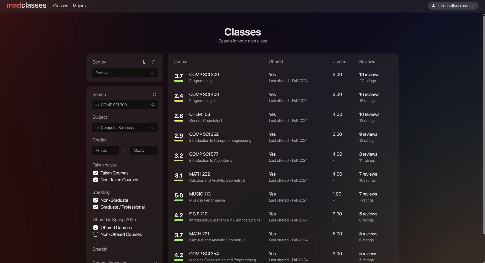
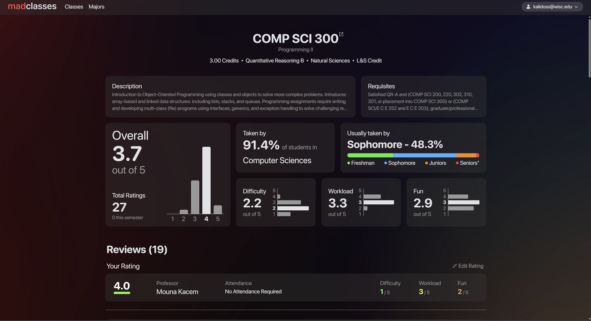
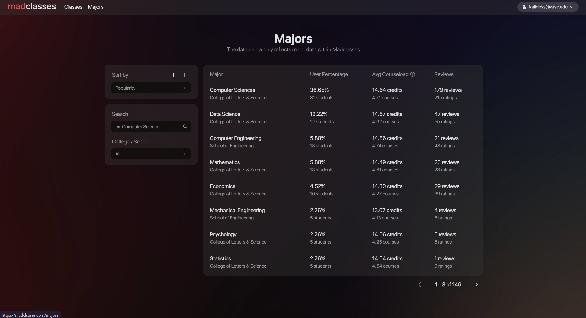
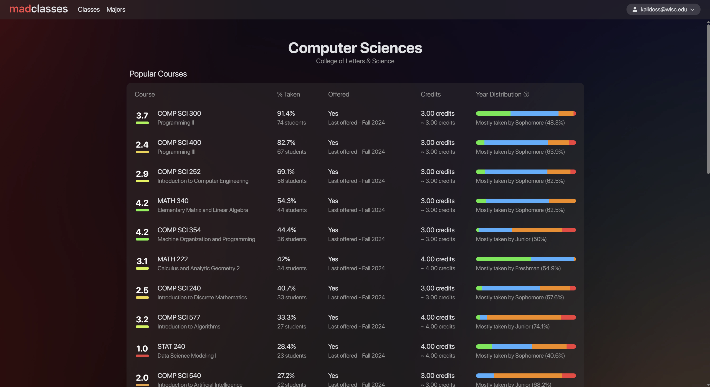

Created with a friend, madclasses.com is a platform designed to help students at the University of
Wisconsin-Madison make informed decisions about their academic choices. The site provides a
comprehensive system for reviewing classes and viewing aggregate statistics for both classes and majors.
Key Achievements
Attracted over 5,000 students in the first semester with over 350 course ratings
Featured in the Badger Herald
Implemented complex data aggregation pipelines for real-time statistics
Designed an intuitive and responsive user interface
Technical Details
Front-end Development
Designed a reactive interface and design system in Figma and built it with Next.js, Tailwind.css,
SWR, and shadcn
Database Architecture
Planned and built a scalable and efficient MongoDB database structure to allow for complex queries
for summary statistics with serverless API endpoints
Search and Data Processing
Implemented ElasticSearch and MongoDB Aggregation Pipelines for on-the-fly data transformation
Project Screenshots

Classes Page - Browse and search for courses at UW Madison

Individual Class Page - View detailed information and reviews for specific courses

Majors Page - Explore statistics for a list of different majors

Individual Major Page - Explore statistics and required courses for different majors